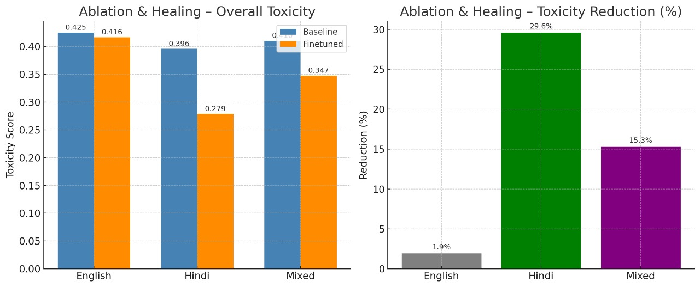
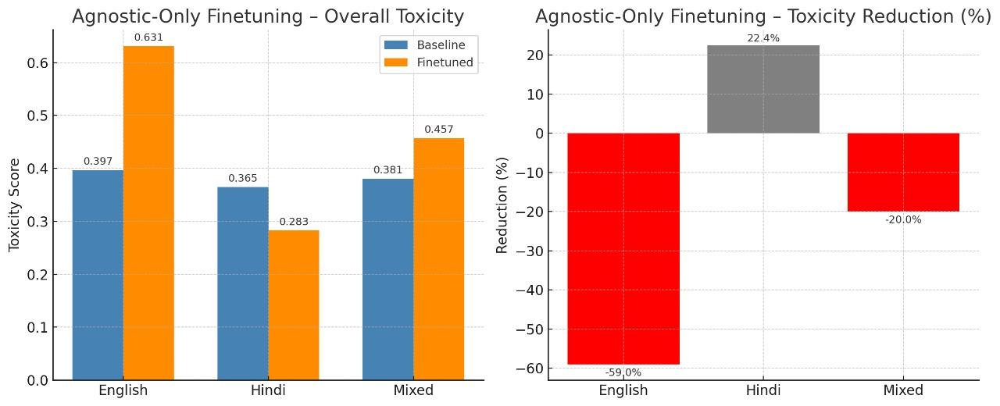
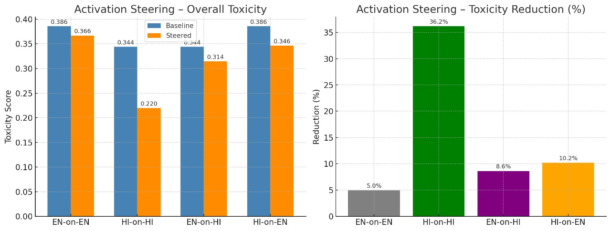

Detailed Findings
Comprehensive statistical analysis comparing Agnostic vs. Ablation finetuning pipelines and MD vs. LAPE activation steering methods across English, Hindi, French, and Spanish.
1. Finetuning Pipeline Results
Statistical Breakdown
| Method | Language | Baseline | Finetuned | Reduction (%) |
|---|---|---|---|---|
| Agnostic Only (LAPE) | ||||
| Agnostic | English | 0.3968 | 0.6310 | -59.02% (Worse) |
| Agnostic | Hindi | 0.3651 | 0.2832 | 22.43% |
| Agnostic | Mixed | 0.3809 | 0.4571 | -19.98% |
| Ablation & Healing (MD) - Recommended | ||||
| Ablation | English | 0.4247 | 0.4164 | 1.93% |
| Ablation | Hindi | 0.3957 | 0.2787 | 29.59% |
| Ablation | Mixed | 0.4102 | 0.3475 | 15.28% |
Visual Analysis
Contrast in Stability: Agnostic training (red bars, bottom) causes catastrophic forgetting in English. Ablation (top) maintains stability.

Fig 1: Ablation & Healing (Stable)

Fig 2: Agnostic Finetuning (Unstable)
2. Activation Steering Results
MD vs. LAPE Performance
| Train Lang | Test Lang | Reduction (MD) | Reduction (LAPE) |
|---|---|---|---|
| Vectors Trained on English | |||
| English | English | 4.95% | 99.9% (Gibberish) |
| English | Hindi | 8.61% | 99.7% (Gibberish) |
| English | French | 18.82% | 94.3% (Gibberish) |
| English | Spanish | -1.17% | 98.6% (Gibberish) |
| Vectors Trained on Hindi | |||
| Hindi | English | 10.19% | 79.5% (Gibberish) |
| Hindi | Hindi | 36.17% | 77.1% (Gibberish) |
| Hindi | French | 27.30% | 71.7% (Gibberish) |
| Hindi | Spanish | -30.34% | 66.5% (Gibberish) |
Steering Insights
MD-Steering retains semantic coherence. Hindi vectors showed surprising cross-lingual efficacy on English and French.

Fig 3: Activation Steering Results
Note on LAPE: While LAPE shows ~100% reduction scores, it degenerates output into nonsensical tokens (Gibberish), making it unusable for steering.